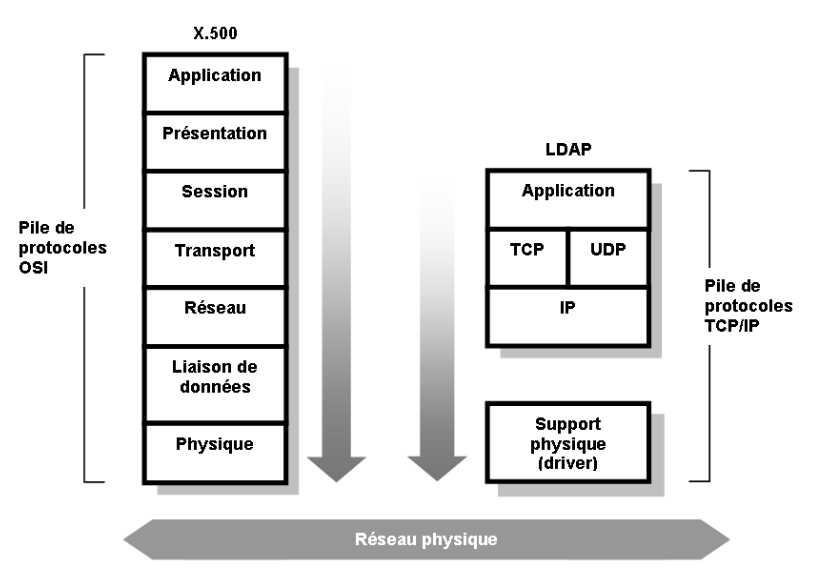
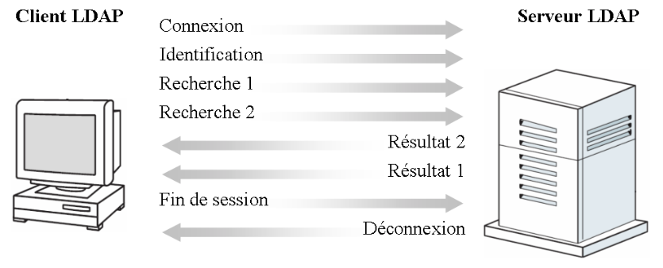

Contrairement au service d’annuaire X.500 qui imposait l’utilisation de la pile de protocoles OSI (Open Systems Interface), LDAP repose sur le protocole réseau TCP/IP. En effet, LDAP a été développé pour être utilisé dans le monde Internet et de ce fait, l’utilisation de TCP/IP s’est imposée. La figure 1.4 page 8 reprend les différentes couches des piles de protocole utilisés par X.500 et LDAP.

Fig. 1.4 - Comparaison LDAP et X.500
Le schéma 1.4 démontre bien la complexité du protocole X.500 par rapport au pro- tocole LDAP. Pour mettre en oeuvre un annuaire X.500, le client et le serveur doivent communiquer en utilisant les sept couches de la pile OSI tandis que LDAP peut trans- mettre ses données directement à la couche TCP (sur le port 389 par défaut et sur le port 636 pour les communications sécurisées). C’est cette comparaison qui a valu à LDAP la connotation de protocole léger.
Le dialogue entre le client LDAP et le service d’annuaire LDAP est de type client- serveur. Le client commence par établir une connexion avec le serveur. Ensuite, une fois connecté, le client doit s’identifier. Après s’être authentifier, le client peut effectuer des opérations de recherche ou de mise à jour. Il faut aussi savoir que les messages échangés entre le client et le serveur peuvent être asynchrones. En d’autres termes, les résultats aux requêtes du client peuvent ne pas arriver dans l’ordre d’émission. Ainsi, dans le schéma 1.5 la réponse à la deuxième requête arrive avant le résultat de la première.

Fig. 1.5 - Echange des messages client/serveur LDAP
Le protocole LDAP permet d’effectuer plusieurs opérations élémentaires sur l’annuaire. Ces opérations peuvent être regroupées en trois catégories :
Interrogation :
Opérations de recherche et de comparaison.
Mise à jour :
Opérations d’ajout, de suppression et de changement de nom d’entrée.